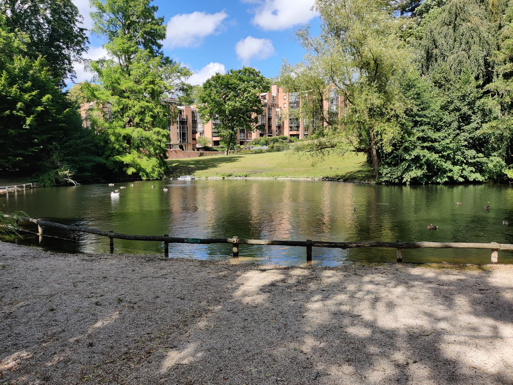
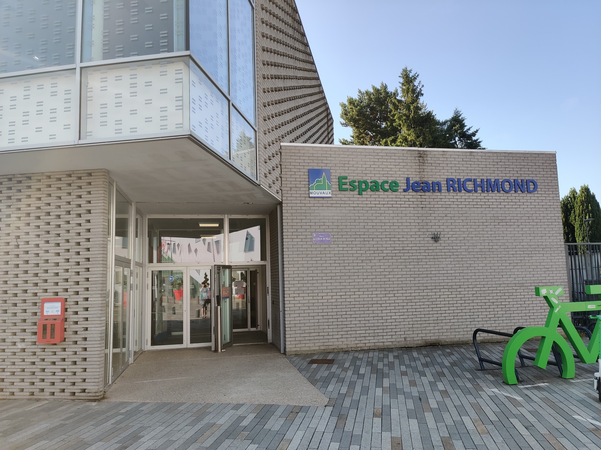

 Tästä se reissu alkoi. Vähän ennen klo 5 soi herätyskello. Koska päätin syödä aamupalan vasta lentokentällä niin pääsin lähtemään heti ylösnoustuani. Suuntana Helsinki-Vantaan lentoasema. Lento kohti Brysseliä lähti klo 7:40 niin tarkoitus oli saapua paikalle puoli kuuden aikoihin. Turvatarkastuksessa ei ollut mitään hämminkiä tällä kertaa (muistaakseni).
Lento laskeutui Brysseliin paikallista aikaa klo 9:20. Siitä jatkoin matkaa Flibco-bussilla Ranskan puolelle kohti Lilleä. Muistan että tuli melkoinen kiire ehtiä bussiin enkä kerinnyt syödä mitään (bussi lähti jo klo 10:00 paikallista aikaa). Näin jälkikäteen ajateltuna olisi voinut varata bussin myöhemmäksi. Pari tuntia bussissa olivat yllättävän pitkiä. Maisemat eivät olleet mitenkään ihmeellisiä.
Bussi saapui Lillen päärautatieaseman eteen paikallista aikaa klo 12:20. Päätin lähteä etsimään paikkaa missä ladata puhelinta ja sen löysinkin aseman vieressä olevasta ostoskeskuksesta (Euralille). Samassa ostoskeskuksessa pääsin ekaa kertaa kokeilemaan Popeyes-ketjuravintolan tarjontaa. Hetken aikaa kierreltyäni ostoskeskusta päätin suunnata ratikalla kohti Mouvaux'ta.
Mouvauxiin saapumisen jälkeen lähinnä kävelin majoituspaikan läheisyydessä. Sisäänkirjautuminen vasta klo 17:30 niin aikaa oli liikaakin. Majapaikkana ensimmäiset kolme yötä toimi majatalo nimeltä au vieux cèdre (kyllä, se kirjoitetaan kokonaan pienellä). Paikkaa pyöritti mukava vanhempi pariskunta. Kommunikaatio hieman hankaalaa koska he eivät juurikaan puhuneet englantia ja itse en puhu ranskaa mutta Siitä selvittiin joten kuten. Kävin vielä tutustumassa paikalliseen puistoon (Parc Du Hautmont). Tämän jälkeen söin illalliseksi Domino's-ketjun pizzan. Muuten todella hyvä pizza mutta onnistuin polttamaan kitalakeni sitä syödessä eli en suosittele aloittamaan sen syömistä heti sen saatuasi. Loppuilta menikin sitten lepäillessä majapaikassa.
 Tästä päivästä on huomattavasti vähemmän kerrottavaa kuin edellisestä joskin tämän päivän tapahtuma oli yksi niistä syistä miksi lähdin tälle reissulle. Osallistuin siis Bushiroad Summer Fest-tapahtumaan mikä on siis Regional-tason turnaustapahtuma missä pelataan Bushiroad-yhtiön korttipelejä. Turnauspaikkana Espace Jean Richmond. Lauantaina oli edessä Cardfight!! Vanguard-pelin Standard-formaatin turnaus mihin osallistuttiin tiimeinä. Omassa tiimissäni oli kaksi belgialaista joista toisen tunsin entuudestaan (Dylan). Turnaus meni tuloksellisesti penkin alle niin itselläni kuin tiimilläkin. Ei me tosin hirveästi odotettu.
Turnauksen jälkeen kävin syömässä lasagnen paikallisessa italialaisravintolassa minkä nimeä en enää muista. Oli ihan hyvää. Se siitä päivästä.
Toinen turnauspäivä ja vuorossa Cardfight!! Vanguard-pelin Premium-formaatti. Toisin kuin eilen niin tähän ei osallistuta tiimeinä. Premiumin osalta turnaus meni huomattavasti paremmin mutta en ihan päässyt topcut-sijoille joten pieni pettymys jäi.
Turnauksen jälkeen päätin käydä tutustumassa Tourcoingin alueeseen (Mouvaux'n naapurissa). Hirveästi ei ollu nähtävää ja kauheasti tietöitä menossa. Löysin kuitenkin pienen sandwich-putiikin missä söin 8 €:lla todella täytteisen kanaleivän. Tästä taitaa tulla ruokapäiväkirja matkapäiväkirjan lisäksi kun iso osa tekstistä kertoo ruoasta. Loppupäivä meni majapaikassa valmistautuessa seuraavan päivän matkustelua varten. Belgia odotti.
Agendana tosiaan oli matkustaa Brysseliin. Olin käynyt siellä kerran aiemmin noin kolme vuotta sitten. Aamupalan jälkeen palasin ratikalla Lillen päärautatieasemalle. Mainitsen tässä välissä että en tykännyt majatalon aamupalasta. Leivälle ei ollut mitään muuta kuin hilloa. Jatketaan. Juna lähti Lillestä klo 11:01 ja saapui Brysseliin 33 minuuttia myöhemmin. Siitä sitten lisää seuraavalla sivulla.